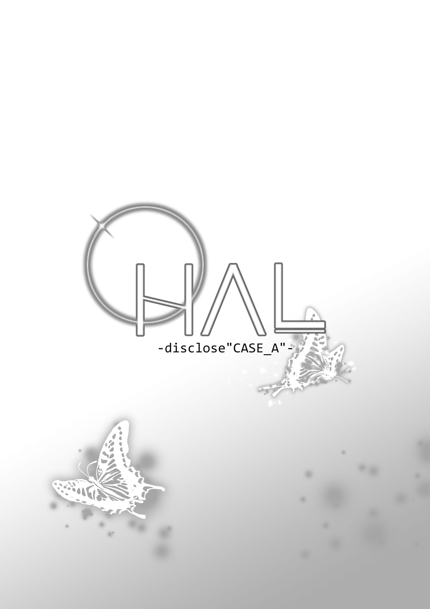
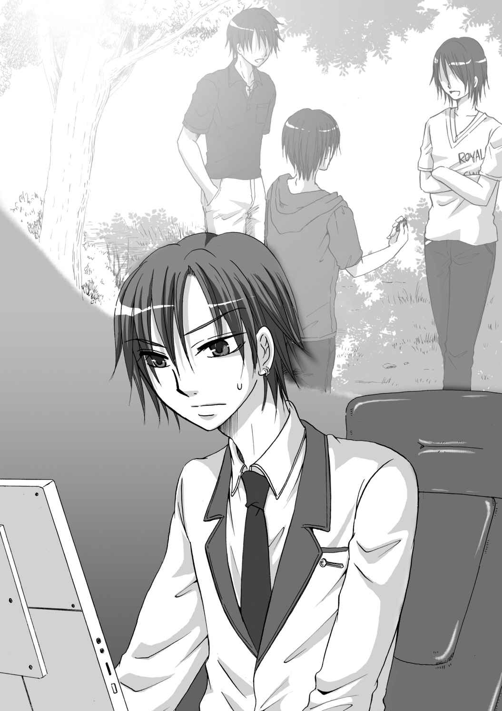
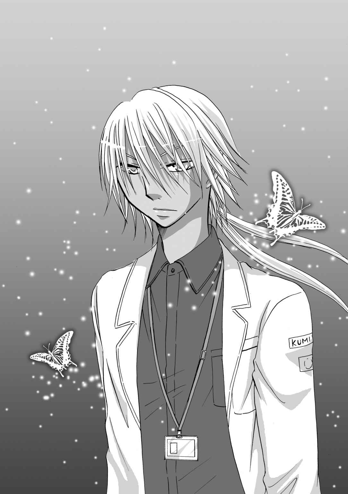

| HAL-disclose"CASE_A": ニキヤ篇 (MoonLovers) | |
| Pro-ZELO | |
| (2019) | |

『HAL-disclose"CASE_A"-ニキヤ篇』
カーキ色の制服がａｌｅｓ 本部に翻 るのを見ると、ニキヤは、平和になったことを実感する。
ａｌｅｓの白とブルーを基調にした制服に対して、カーキ色の制服――軍服は、つい二年前まで敵国であった、レーデスライヒ共和国のものだった。
「ラジュル准将、いま、お帰りですか？」
ラジュル准将、ニキヤ・ラジュルに声を掛けてきたのは、艶やかなストレートの金髪を綺麗に結い上げた、美貌の共和国交換研修生、ヴォーヌ・ドメイヌ一等空佐だった。
共和国と聖ルーンでは、階級呼称が異なっているが、ニキヤより階級は上になる。知的美人と名高いドメイヌ一等空佐は、ａｌｅｓ男性隊員から、熱い視線を送られる存在でもあった。
「ええ、そろそろ、宿舎に戻ろうと思います。ドメイヌ一等空佐は？」
「私も、そろそろ上がろうかと思っていたところでした。ラジュル准将、よろしければ、宿舎まで、ご一緒したいのですが」
ドメイヌ一等空佐の申し出に、ニキヤは面食らった。ドメイヌ一等空佐は、ニキヤより六つ年上の二十五歳だ。ニキヤのような二十歳にも満たない若造に興味を持つとは思えなかった。
ニキヤは、周りのａｌｅｓ隊員たちが恨めしそうに見ているのに気付いて、正直な所、（困ったな......）、と思ったが、ここで、彼女の申し出を断る理由も無かった。
困り果てている所に、
「お！ ラジュル准将！ それに、ドメイヌ一等空佐。なにか、とりこんだお話しかい？」
と、明るい声で割り込んできたものがあった。軍隊であるａｌｅｓでは珍しい、長髪のアンジェイ・サリュー少佐は、ニキヤより二つ先輩だった。二年前のネレイデス事件で功績のあったニキヤの方が、階級が上になってしまったが、明るい性格で、ニキヤは助かっている。
「これは、サリュー少佐。今、ラジュル准将が宿舎に戻られるというので、ご一緒できないか、伺っていたところです」
生真面目に言うドメイヌ一等空佐に、サリュー少佐は「そういうことなら、俺も一緒に行くとしよう。ついでに、こいつの部屋で少し話でもしてから、食堂に晩飯を食いに行けばいいさ」とカラカラと笑った。
勝手な事を、と思うニキヤだったが、サリュー少佐が居てくれれば、ドメイヌ一等空佐が一緒でも、気詰まりにはならないだろう、と思って
「そうしますか」
と、サリュー少佐の申し出を素直に受けた。
サリュー少佐とニキヤは、ここ二年の間に親しくなった。
理由は簡単で、同僚のハヤト＝エーテル・ルナリスと水谷レイジがほぼ同時にａｌｅｓを退職したからだった。
同期は三名。
ほんの半年ばかりだけの同僚だったが、いつも三人一緒に行動していたのを懐かしく思う。同期の新人同士ということで、最初こそ喧嘩ばかりしていたが、それでも、気の置けない友人だった。
けれど、『ネレイデス事件』のあと、二人はニキヤに何の相談もなく出て行った。したがって、ニキヤは独り取り残される形になった。
二年前のネレイデス事件では、ハヤトと水谷の三人が中心になって、聖ルーン、レーデスライヒ、地球の三国を平和に導いた功績から、『空の英雄』と呼ばれるようになった。十九歳の若さで、ニキヤが准将となっているのも、その為だ。
「ラジュル准将は、あのネレイデス事件の功績者なのでしたよね」
ドメイヌ一等空佐が恐る恐る、という様子で問いかけた。
「一番の功労者は、ハヤト＝エーテル・ルナリスです。同期でしたが、今は退職して、地球のロスマリノス・シティに居るはずです」
「ラジュル准将も、聖ルーンでのネレイデス・システムへの攻撃などは、今でも、情報部の語りぐさになっていると聞きました」
「共和国の、ロイ・ルディエール空将のご尽力あればこそです」
上辺だけのお世辞の応酬とも言える会話に、ニキヤが心底辟易してきた頃、三人はニキヤの部屋に辿り着いた。キーを開けながら、（そういえば、お茶とお菓子あったかな）と、ニキヤは、部屋にあるはずの菓子の在庫を頭の中で反芻した。
（そういえば、昨日、聖皇猊下から、焼き菓子を頂いたんだった）
それを思い出して安心したニキヤは、二人を自室に招き入れた。
「どうぞ。散らかっていますが」
ニキヤは二人に、椅子を勧めた。准将に上がってから、ニキヤは広い部屋に移った。准将ともなれば、このように部下達や上官が尋ねてくることもあるという配慮だろう。広々とした部屋を宛がわれる。理由はともかく、リビングと、寝室が別になっているのが、ニキヤには有り難かった。
部屋は、モノトーンが基調のシンプルな作りだったので、昔の部屋にいた頃と同じ、『ANTHEM』のポスターが貼ってある。
「あら、准将。この、ポスターは？ 大分、古いポスターのレプリカのようですけれど......今時、紙のポスターというのも、大分珍しいですね」
「ああ、私の、好きなアーティストです。三百年以上も昔の曲ですけれど、妙に、胸が騒ぐようで、好きなんです。『ANTHEM』」
「三百年って......凄いな。地球のアーティストか。ええと......『ANTHEM are Ayahito Seto,Kazuki Sawatari,Maci Kenjyo.live tour "World ANTHEM 2nd" 2009.02.17-2010.01.21 TOKYO,PARIS,LONDON,BERLIN,MOSCOW......』えーと、凄いな、地球中を回ってたのか。人気だったんだな、このアーティスト。音源はあるのか？」
「ちょっと、聞いてみたいです」
思いがけず、サリュー少佐とドメイヌ一等空佐がANTHEMに興味を示したのが意外だったが、ニキヤはこれで手持ちぶさたにならずに済む！ と、一番の気に入り、ANTHEMのラストアルバム『Asian Soul Naked』を再生した。
その間に、茶と茶菓子を用意して、二人に出し終えたニキヤは、ふぅ、と息をついた。
二人は、真剣に、音楽に耳を傾けていて、まるで、実戦の真っ直中で、敵の足音を聞き分けているような険しい顔つきだったので、「音楽は、リラックスして聴けばいいのに」と苦笑したので、二人の緊張も解けたようだった。
用意した紅茶に、角砂糖を十五個カッキリ入れてスプーンで丁寧にかき混ぜながら、
「古くさいサウンドも、なかなか、楽しいでしょう？」
とニキヤは、笑顔で二人に問いかけた。ドメイヌ一等空佐は、ええ、と大きく頷いて、
「そうですね。この......サウンドの、歌の......言葉、は私には解らないのですけれど、とても、居心地の良いサウンドです」
「ラジュル准将、これは、なんていう言語なんだ？」
「たしか......、地球の、今は......水没して、特に危険地域指定されているエリアに、日本 というエリアがあるみたいだけど、そこの言葉だったはず。小さな島国だったんだけど、意外に、科学技術が発達していたらしくって、そうそう、ロスマリノス・シティとネレイデスシステムは、この島国の科学者達が中心になって作ったらしい。それと、水谷家とかは、ここの出身らしいから、日本語をみっちり教えて貰ったんだ。そのおかげで、ANTHEMの曲も、なんとか理解出来る」
「失われた言語って、なんか、ノスタルジックで良いな」
うんうん、ノスタルジック、とサリュー少佐は自分の言葉に酔ったように、何度も頷いた。
「他に、その、日本というエリアの出身の方とかは居ないのですか？」
「みんな、月に来たときに、自分の故郷を捨てたから、新しい名前になった人達も多いみたいだし......、ああ、でも、あの、コングロマリットのクミヤは、日本だって聞いた。あと、ロイの大好きな、忍者と侍ね。あれ、日本だから......」
と、ニキヤは、共和国のリーダーでもある、ロイ・ルディエールの忍者・侍好きを思い出して、頭痛を憶えた。当年、三十五歳になるロイ・ルディエールは、未だ独身だが、可愛いモノ好きと侍ニンジャ好きという一面もあり、中々、伴侶を見つけるのは苦労しそうだとニキヤは思う。
「ああ、確かに、あの方は、侍が好きでした。それで、元ａｌｅｓの水谷氏に付きまとっていたという噂があります」
「そうなんです。うちの水谷、元々、諜報部にいたので......それで、勝手に、あの人が、『忍者』と言い張って......」
諜報イコール隠密イコール忍者という実に単純な三段論法であることは、容易に予想が付いた。
「うちのリーダーが、大変ご迷惑をお掛け致しました。最近は、大丈夫なんですか？ 今も、各国間定期運行船の開発で、聖ルーンに居着いていますけれど」
ドメイヌ一等空佐の言葉を聞いて、ニキヤは驚いた。各国間定期運行船自体は知っていたが、そこに、ロイ・ルディエールが関わっているとは全く知らなかった。その上、聖ルーンに滞在している事も、全く知らなかった。かつてロイ・ルディエールがａｌｅｓに居た頃は、親しくしていたつもりだったので、ロイ・ルディエールが、ａｌｅｓに顔を出さなかったことを、ニキヤは不満に思った。
「でも、あの人、なにで、関わってるんだよ」
「さあ、詳しいことは聞きませんでしたけれど、こちらの、カナン・レクタス博士と共に、作業に当たっていると言うことですよ」
「えっ？ カナンさんと？」
それは、更に意外だった。カナン・レクタス博士は、柔らかな物腰と、穏やかな毒舌で定評のある優男だったが、専門は、数学だったはずだ。
「あの、大変失礼なんですけど、......俺、あの人が、ロイが......九九も言える気がしないんですよ」
ニキヤは、必死に被っていた猫を下ろして、ドメイヌ一等空佐に溜息混じりに言った。
「あら、同感です。私も、インクルード・ガッドゥがあの方の側に居るときは、必死に、カンニングペーパーを渡しているような、そんな、イメージがありましたから」
美しい笑顔で、中々辛辣な事をいうドメイヌ一等空佐にひやり、と胸が冷えるのを感じながら、ニキヤは「やっぱ、そうだよなぁ」と呟く。やはり、ニキヤの知る、ロイ・ルディエールという男は、九九も言えないほど、勉強など出来なさそうな雰囲気の持ち主だった。その上、しょっちゅう、建物の中で迷っていたのを思い出す。やはり、高等数学は無理なんじゃないかと思ったときに、
「あれだろ、きっと、レクタス博士が、一から『算数』を教えて遣ってるんだろ」
とサリュー少佐が、ガハハと豪快に笑いながら言った。共和国の軍人の前で、そのリーダーを侮辱する発言だと気が付いて、流石にニキヤも「サリュー少佐！」と窘めたが、とうのドメイヌ一等空佐の方は、
「あ！ それでしたら、大分、我が共和国にとって、利益になりますね。レクタス博士には、お手数をお掛けして大変申し訳ないのですけれど、一から鍛え直して頂いた方が、国益になります」
と、明るい笑顔で言い切った。
（なんだか、国での評判が心底心配になる人だなあ）とニキヤは、思ったことを今度は、口にしなかった。しかし、十九歳のニキヤより、ゆうに一回り以上年嵩の男だが、ロイ・ルディエールは、なぜか、こんな余計な心配をしたくなるような男だった。
ある意味、放っておくことの出来ない魅力のある男、とでもなるのだろう。―――と言うことにしておこう、とニキヤは無理矢理、自身を納得させた。
「まあ、それにしても、ロイが聖ルーンに居るうちに、カナンさんの所に行ってみることにするよ。ふぅ、また、猊下にフィナンシェ、作って貰わなきゃ、カナンさんへの手土産は、絶対、猊下特製のフィナンシェが一番だから」
「フィナンシェ？」
「ああ、いま、二人に出した、この焼き菓子だよ。これ、聖皇猊下が作ったモノでね。カナン・レクタス博士は、聖皇猊下が大っ嫌いなんだけど、お菓子は、聖皇猊下が作ったのをわざわざ、聖殿に忍び込んで盗んでいくんだよ。本当に困ったことに。あの人、元軍人だから、この建物の裏の裏まで詳しいったら......ゴキブリ並に、どこにでも現れますよ」
そうして、ニキヤたちは、身近かな人間の話に興じている間に、大幅に夕食の時刻を過ぎてしまい、結局、街に出て食事を取った。
食事の雑談中、サリュー少佐から思わぬ情報を聞いて、ニキヤは視聴覚室に向かった。
『そういえば、視聴覚室って、地球から運んできた映像データとか、もの凄い数、保管しているんですよ。俺、新人の頃、雑用で視聴覚室の棚の整理をさせられたんです。
地球って、聖ルーンとは比べものにならないくらい、色んな動物とか植物とかがあったみたいで、面白そうでしたよ』
映像データ、の中に、ニキヤの好きなANTHEMの映像でもあるのではないかと、不意に思ったからだ。地球からのデータは、今の聖ルーンでは視聴できない形の規格 になっているが、これを解消する為の、エンコーダをニキヤは持っていた。実は、このエンコーダがなければ、ANTHEMの曲も聴くことは出来なかったからだ。
「規則違反なんだけど、ちょっと、歌曲とか動画データを取り出すくらいなら、いいよな」
もし、処分が下ったとしても、訓告や降格くらいで済むだろうという腹もあった。降格、は。むしろ、大歓迎だった。ニキヤのような若年に『准将』の地位は、少々、荷が重い。ネレイデス事件での、多少の功績があったとはいえ、タナボタ昇格だったのは、間違いない。本来ならば、ハヤト＝エーテル・ルナリスあたりが昇格するはずなのに、ハヤトは、ふらりとａｌｅｓを辞めて、恋人になったサージュと共に、地球に向かった。
そして、今は、なぜか旧敵の山中の所に居候しているらしい。
このあたりの事情は、ニキヤは全く知らないが、彼らが言わないことなのでニキヤから聞くこともなかった。
視聴覚室に向かい、奥の倉庫に入る。初めて体験する埃の臭いに噎せそうになりながら、ニキヤは鼻を覆った。室内は、資料保存の為に薄暗いが、一応、分類はあるらしかった。分類を辿りながら調べていくと、資料棚の一角に『Ａ』の項目があったので、ここから調べることにした。ANTHEMならば、ここにあるはずだ。
ニキヤは、じっと、目で資料を追って行く。暫くした頃、『World ANTHEM tour 2009』の文字があった。
「あ！ すげーっ！ ホントにあった！」
思わず大声を出してしまい、慌てて、手で塞ぐ。念のため、もう一度、文字を辿るが、確かに、ANTHEMだった。しかも、ずっと部屋に貼ってあるポスターのツアー。どんな映像が入っているのか。地球中の様々な都市を回ったというANTHEMのラストツアー。
TOKYO,PARIS,LONDON,BERLIN,MOSCOW......。どの都市も、もう既に、地球から失われたはずで、ほんの少しでも、地球が繁栄していた頃の、その都市を見ることが出来るかも知れないというのも、ニキヤにとっては魅力だった。
「『World ANTHEM』っていうことは、『World ANTHEM』のツアーだよなー。うわー、『Asian Soul Naked』からも歌うのかな～楽しみ！」
いそいそと、『World ANTHEM tour 2009』のラベルの貼られた大きな黒箱を持ち出して、視聴覚室の個人利用スペースに向かった。この個人利用スペースは、大佐以上の階級を持たないと利用できない。ニキヤが准将に上がって良かったと思うのは、こんな時くらいだ。
「えーと......これは、光学ディスクと......なんだろ、磁気テープか......」
幸いなことに再生機は、何とか、なりそうだった。ニキヤは、それらのメディアをセットして、手持ちのエンコーダを仕掛けると、もう一つ、記憶媒体を取りだした。最近流行の『キューブ』と呼ばれる記憶素子だった。水晶のように透明な結晶状をしている。指でつまめるほどの小さな立方体の記憶素子には、『地球で発行された全世界中のすべての新聞を五千年分記憶できる』というが、それが、一体如何なる単位なのか、ニキヤにはイメージできない。とにかく『凄いんだ』ということだけは伝わったので（なにせ、五千年分だ）、これを入手していた。
『キューブ』のコマーシャル映像は、そこかしこで流れているので、あまり、動画媒体を視聴しないニキヤでさえ、憶えている。
『......地球に、これが在ったら良かったのにね』
感傷的に地球を見つめる、女の横顔。掌に『キューブ』。女は、ニキヤは憶えていないが、最近人気の女優だ。真っ白な肌に、真っ白な髪の色ということで、彼女は『スノウホワイト』の異名で呼ばれている。
『地球で何が起こったか、興味があるの？』
差し向かいにいた男が、女を見つめながら優しく聞く。この優男は、ニキヤも覚えがあった。九宮天 。
聖ルーンで一番の大企業、クミヤグループの御曹司にして、今一番人気のある俳優だった。優しげな笑顔がウリの俳優で、二枚目俳優の割りに男性からも好感度が高いのが珍しい好青年だ。オッドアイなのは珍しい。しかも、天然の色で、紫と金の瞳だ。
『地球上で交わされた、すべての約束と、恋物語が、この中に収まるかしらね』
『ロマンティックだね......でも』
九宮天が、彼女の手を『キューブ』ごと、両手でやんわりと握りしめる。
『僕の想いなら、こんな小さな結晶に閉じ込められないよ』
スノウホワイトと、九宮天の顔が近づいて、カメラは背景の地球へと移動する。男性の低いナレーションで『かけがえのない記憶を、記録するために―――キューブ』というキャッチコピーが流れる。
そして、小さく、クミヤグループのロゴマークとサウンドロゴ。
如何なる技術で、この無色透明な結晶状の立方体に記録できるのか、ニキヤにはさっぱり意味が分からないが、とにかく、膨大なデータを記録できるのは有り難い。ニキヤは、エンコーディングしながら、ついでに映像を再生させて、それを、キューブに保存することにした。
WORLD ANTHEMの文字が大きく映し出される。
俄に、ざわめく背景。様々な言語で、怒声が響き渡っていた。
楽屋、の風景らしい。『2008年12月2日 リハーサル（都内某所）』のテロップが出る。ツアー前のリハーサルらしい。
そこで、AYAこと、瀬戸文一 が、ギターをつま弾いている。真っ赤なストレートの髪が、腰まで伸びている。赤は、AYAのテーマカラーだ。それゆえに、身に纏っているのも、真っ赤な薔薇をあしらった衣装だった。薔薇は、ANTHEMの象徴でもある。
『アーヤ、衣装大丈夫？』
声を掛けたのは、MACI 。見城麻紀 。ドラマーだ。そして、『ANTHEM MACI』というファッションブランドを手がけるデザイナーでもある。真っ白な衣装を纏っている。ドラマーなのに、袖の長い振り袖のような衣装だった。
ニキヤは、この画像を見ながら、心底、日本語を勉強して良かったと感動していた。ANTHEMの言葉を、ダイレクトに、他人の言葉を媒介せずに、聞くことが出来る。それは、大きな歓びだった。トランスレートの間に、意味が変わってしまうこともある。失われた言語である日本語を理解して居るニキヤには、少なくとも、意味を取り違えることは、ない。
もっとも、こうして残されている、『楽屋裏』の風景が、そっくりそのまま、彼らのナマの会話だとは、ニキヤも思っていない。『筋書き』はあるのだろうし、ヘタをすると『シナリオ』まで用意されているかも知れない。しかし、ここに何かを伝えようとする『意志』だけはある。それがなければ、クリエイターは、沈黙を選ぶだろう。
『大丈夫。きつくはない』
『むしろ、緩くない？ AYA、また痩せただろ』
KAZUKIこと、佐渡一樹。こちらは、黒髪の半分を、青く染めて青色の衣装。
『痩せてない。ベスト体重。採寸したときが、少し肥ってたんだよ』
『なあ、AYA。それ、あの子に頼まれた曲？』
『うん。オレさぁ。ライブで他の人の曲、演 んのは、御免被りたい所なんだけどさあ......、あの子、あまりにも真剣に頼むからさ』
『頼む......って？ それ、やってくれって？』
『うん。だから、オレは、あの子を信じる方に、betしようとおもうんだよね』
『それは、まあ、リーダーのお前がそう言うなら、良いんだけどさ......、あの子、お前になんて言ったの？』
KAZKIが、不審そうに、短い黒髪を掻き上げながら、問いかけた。少し、苛立っているようにも見えた。
『ん？ あの子ね、『どうしても、３５０年後に、届けなきゃならないから、瀬戸さんお願いします』って、言ってきた。殆ど、土下座の勢いで』
『３５０年後......？ なんだそりゃ』
『えーと、詳しいことは解らないし、聞かないけどさ。マジメなあの子が、そういうんだから、『そう』なんでしょ』
『３５０年後......』
『そー。多分、３５０年後に、『届ける』為に、オレに歌えって言うんだよ、あの子。ただ、ちょっとだけ、聞いた話だと、もともと、コレは映画の為の主題歌だったのが、ポシャッて、それで、蔵入りしたらしい。ま、結果として、完成したのに公開されなかった映画なんか、山ほどあるんだから、そのうちの一本だったら、不思議なことじゃねぇけどな』
ハハ、とAYAは笑った。なにか、それには、嫌な思い出でもあるような、吐き捨てるような言い方だった。
『だから、世界中で、アイツの......雅楽川中 の、『月の啼く方』を歌ってやるって、ま、決めたわけだよ、オレは』
『......ま、良いけどね。お前と、あの子が仲が良いって言うのは、みんな知ってるからな。あの子のブログ、たまーに、お前のことを語り倒してるときあるぞ？ あの子のファンは、みんな引いてるよ』
『へー、KAZKI、ブログとか見に行くんだ。僕とAYAは、ネットの検索なんか、ほとんどしないよ？』
『えっ？ AYAとMACIは見ないの？』
『オレは見ないね。自分の悪口なんか、わざわざ見に行くのは時間の無駄だろう』
『褒められてるときだってあるだろ？』
『オレは、自己評価は無意味だと思うし、他人の評価の言葉 は、アテにしてない。本気で、良かったんだったら、次の仕事のオファーとスケジュールが決まる。今のオレらなら、一回コケても、許して貰えそうだけど、二回、三回はないだろ？ それが、評価って奴だよ。だから、オレは、一生、馬車馬みたいに歌うのが理想だね』
AYAは、ニヒルに笑った。それを聞いていたKAZKIが『オレは、もう少し甘やかされたいけどなぁ』としみじみ呟く。
『AYAほどストイックじゃないけどね。僕も検索はしないかな。僕は、悪口言われてたら、部屋から出られなくなりそうだから』
唐突に、画面が切り替わる。
薔薇の祭壇。
真っ白な薔薇。薔薇が敷き詰められた、祭壇。そして、黒い服の客。祭壇の中央に、MACIの写真。それは、葬儀の動画だった。黒い服のKAZKIの隣に、シルクで出来た真紅のフロックコートを着た、AYAが居て、モノクロームの映像に、一点、赤い彩を残していた。
『MACIは......見城麻紀は、ANTHEMにとって、扇の要のような男でした。
その、MACIを失って、私達ANTHEMは、空中でバラけてしまったように、心許ない気持ちで居ます。MACIが死んだ夜、私は、彼と共に、バーで酒を交わしていました。彼が呑むのは、いつも決まって、カルヴァドスでしたが、その日に限って、甘いカクテルを飲んでいたので不審がって聞くと、翌日、彼の恋人の誕生日で、０時きっかりに、恋人の所にプレゼントと白い薔薇の花束を届けると、嬉しそうに話していました。
その後、バーを出たMACIは、報道されましたように、三人の泥酔した未成年者の運転する車の暴走による事故に巻き込まれて、命を落としました。最後の着信履歴から、私が現場に呼ばれたとき、彼は救急車で搬送されたあとで、血だまりの中に、薔薇の花と、プレゼントが転がっていました。白い薔薇が、真紅に染まっていたのを、私は、今も、夢に見ます。
私はこの時点で、ANTHEMを解散して、ツアーも中止しようと思いましたが、MACIの恋人に、止めないで欲しいと、懇願されて、思いとどまりました。MACIの恋人は、MACIの代わりを務める、ミュージシャンを紹介してくれました。そして、ANTHEM MACIは、ブランドを続行することにしました。今回のツアーの衣装に関しては、既にANTHEM MACIで作成段階に入っておりましたが、羽馬洸 氏率いる『３×３ｃｒｏｓｓ 』に一任することになりました』
AYAは、祭壇をじっと見つめた。
『『World ANTHEM』は、続行するよ。そのあとは解らないけど、これで良いんだろう？ MACI』
AYAが呼びかける。純白の祭壇の写真は、何も、何も語らない。
画像が変わる。
ライブの映像だった。ドラムセットには、誰も座っていない。ただ、白い薔薇の花が、供えられていて、それは、薔薇の花をこよなく愛した、MACIを意味するものだった。
AYAはギターと、そしてボーカル。
KAZKIがベース。
サポートメンバーは、KEN5 とあった。AYAとKAZKIよりも一回りくらい年若い、少年のように華奢な身体の男だった。担当は、シンセサイザー兼マニピュレータ。ドラムの音は、すべて、サンプリングしたものを再生しているらしい。ANTHEMのドラムは、MACI以外は、認めたくない、というのが、AYAの意向だった。
『サポートメンバーの、KEN5は、アメリカのダンスカンパニーに所属していたのを、無理矢理、引っ張ってきました』
『どーも、KEN5ッス！ この舞台に立てて、光栄です！ あんまり、音楽の仕事を遣った経験が無いので、頑張ります！ ヨロシクッ！』
クレジットが流れた。
KEN5。本名、早乙女健吾 。アメリカのダンスカンパニーで活躍後、ANTHEMのworldツアーに参加する。
音楽が専門でない彼が抜擢されたのは、彼の踊りのリズムが、MACIのリズムに近いから、と推薦を受けたからだった。
そして、リズムが、廻 きだす。
「へー、３×３ｃｒｏｓｓが、ねぇ」
とニキヤは呟いた。３×３ｃｒｏｓｓは、クミヤグループ傘下のアパレルブランドととして現在の聖ルーンでも、人気だ。ニキヤは一枚も所有していないが（但し、兄弟ブランドの服は愛用している）、ハヤト・エーテル・ルナリスの私服は、すべて３×３ｃｒｏｓｓだったはずだ。
曲が流れ始める。ニキヤの知らない曲だった。
何一つ 始まらなければ 僕たちは しあわせに なれたのだろうか
『愛しさは刃になる』
それを知ったのは
もう君を手に入れることがないと
理解 った時
僕らが過ごした季節は短く
かげろうみたいに消えてゆくけど
胸に残る痛みが
ただ 僕を 狂わせる
何が真実の愛かなんて
きっと誰にもわからないけれど
それでも僕は真実と信じて
君を愛していた
もう叶わない恋だと知ったから
お泣きなさい
透明な闇に怯えながら
満ちて欠けて揺れるあの月みたく
僕の気持ちも移ろえばいいのに
何が真実の愛かなんて
きっと僕にはわからないけれど
それでも僕は気が狂れるほど
君を愛していた
もう叶わない恋だと知ったから
お泣きなさい
あの月が啼くように
『月の啼く方』だった。
間髪おかずに、次の曲が演奏される。『サウダージ』『螺線の都』『ニルヴァーナ』『有罪』『奈落の底』『Asian Soul Naked』......。ANTHEMを代表する曲が爆発するように演奏されていく。
熱狂。
世界中の何百万人の人々が、ANTHEMの名を叫ぶ。その音楽を口ずさむ。熱。爆撃を受けたような、破壊音のような歓声。
唐突に。
予告なく、画面が切り替わる。
真っ青な空。眩い光。それが太陽の輝きであるということを、ニキヤは知らない。遠い空に、入道雲が天空に浮かぶ城でも孕んでいるように、もくもくと沸き立っている。
夏。だ。
そして、夏という『季節』も、ニキヤは知らない。
夏は知らない。春も知らない。秋も、冬も、当然、知らない。
聖ルーンに季節という概念は無く、天気は予報されるものでなく、管理局によって『予定』されているものだった。
年若い、男達が何人も映し出される。ドラマ、か何かの撮影のようだった。何人ものスタッフが、周囲を囲んでカメラを向けている。あるいは、集音器を向けている。照明を、向けている。
『こんにちは。ANTHEMが好きなあなた、初めまして』
唐突に、耳許で声がした――――。
―――ような気がして、ニキヤはドキリとした。声、はナレーションだった。だが、これは、ニキヤに向けられたものだ、と思った。
『僕の名前は、九宮桜 。九宮製作所の、後継者です。元々、僕は、役者を遣っていて、これは、その頃の映像です。東京都の水宿 島という島で、２００８年の８月に撮影された、映画『月の啼く方』の、撮影記録です』
そのタイトルには、覚えがあった。『月の啼く方』。先程、AYAが歌っていた曲だ。
『僕は、海上都市......ロスマリノス・シティを制御する言語に、規制を加えます。そうすると、きっと、僕の伝えたいことは、これを視ているあなたには直接届けることが出来ないと思います。けど、僕は、この世の中から、日本語を公用語から外して、海上都市の管理言語からも、抹消します。こうしておけば、日本語を話すことは出来ても、管理言語の干渉を受けないと思うから。
日本語は、僕の居る時代では、実質公用語に定めている国がたった一つだけで、その国の中では、日本語が使用されていないんです。僕の出身地の、日本という国では、日本語しか使われていないような状態だけど、実は、公用語には定められていないから、管理言語から外すことは簡単だと思うし、そうするつもり。
そして、ANTHEMの歌を聴いてくれたあなたは、きっと、日本語を理解しているんだと思います』
だって、AYAさんがなにを訴えたいか、自分で理解したいと思うもの。
声の主―――九宮桜は、フフ、と笑った。
『この頃、僕は、九宮ではなく、『切通桜 』という芸名を名乗っていました。そんな、僕の本名は、鳩村桜 。僕は、この映画に参加した理由は、十年前に失踪したお姉ちゃん、鳩村ミカの行方を捜すためでした。お姉ちゃんは、十年前に、この島に、映画の撮影のためにやってきて、そのまま、戻ってこなかった。
僕は、ちょっと、事情があってお姉ちゃんとは離れて暮らしていたんだけど、お姉ちゃんの行方は、捜索されることなく、そのまま、その件は、『神隠し』みたいに終わっちゃった。
そんなこと、今まで、語ったことはないけど―――じつは、それ、一緒に撮影に参加していた、俳優の藤堂伊左 さんには知られてました。伊左さんは、うちのお姉ちゃんと、同じ学校に通っていた同級生だったんです。それと、早乙女健吾 くん。僕と、お姉ちゃんと、早乙女健吾くんは、ある事件の、生き残りでした。でも、これ、表向きは、事件になっていないから、ぼくらは、なんて呼べばいいのか解らなくて『Ａ事件』とだけ呼んでます。ああ、それは、さておき。―――この映像は、九宮製作所の研究チームと、国の研究チームに没収されて、本来存在しないモノです。ちょっと、僕が偶然入手したモノを、ここに仕込んでおきました』
次々と語られる出来事について行けずに、ニキヤは混乱した。
映画の撮影をしている、役者―――切通桜は、このナレーションを入れている時点で、『九宮製作所』つまり、現在のクミヤグループの、後継者なのだという。さらに、その実の姉が、この映画の撮影より十年前に失踪。
あまりにも、荒唐無稽すぎて、ついて行けない。
再生を止めようかと思ったニキヤだったが、
『最後まで、聞いて』
という言葉に、なんとか、押し留まった。
『こんな話を、信じて貰えるかどうか、自信はないけど、で、僕らは、こうして、３５０年前から、未来に向かって、メッセージボトルを投げ続けていれば、絶対に、どれか一つくらい、届くだろうって信じてる。だから、コレを受けとったあなたは、どうか、聞いて欲しい』
真摯な願いに、ニキヤは、仕方がなく、「わかったよ」と渋い顔で返事をしていた。
画面上では、若い俳優達が、映画の撮影をしているシーンが、延々と流れている。
ニキヤも、少々気になった。
『月の啼く方』といえば、AYAが歌っていた歌。AYAは、やはり、『雅楽川中』という男に『３５０年後』を懇願されて、歌ったという。そして、サポートメンバーのKEN5。彼は、早乙女健吾だろう。ニキヤの大好きなANTHEMを巻き込んでいるのだとしたら、ちゃんと、見届けなくてはならない、という気持ちになったからだ。
『......じゃあ、続けるね？
えーと、この映画には、『映ってはいけないモノ』が映り込んでしまったんだ。
３５０年後にこれを見ているはずのあなたは、もしかしたら、それが何なのか知って居るかも知れない。
それで、映画はお蔵入り。そして、僕達は、それぞれ、道を別 って、３５０年後の為に、生きることにした。僕達７人の仲間は、それぞれ、遺伝子コードによる判別を付けるように、海上都市の管理システムには組み込む予定だ。遺伝子コードによる判別について、知りたければ、パスワードを教えてあげる。
僕の『本名』と、僕のお姉ちゃんの『名前』。そして、『月の啼く方』が、ただ一度だけ上演された、２００８年１１月１３日が、１９００年１月１日から始まって、『何日目』になるのか。そして、この映像に『映り込んでしまったモノ』の名前を入力すると良い。
まあ、ともかく、遺伝子コードによる判別のおかげで、海上都市のセキュリティは、より強固に守られることになると確信している。
そう。あなたは、きっと、ここに映ってはいけないモノが何なのか、解ると思う。そうしたら、なぜ、それが、そこに『在る』のか、ひたすらに考えて欲しい。そして、忘れないで。僕らは、３５０年後に向けて、出来るだけ、メッセージボトルを投げたつもりだ。なにか困ったことが在ったら、日本語で考えて。そして、何かがあったら、『地球を見て』そして『月を観て』。どうか、お願い。そして、いつの日か、あの子達を、助けてあげて欲しい』
ナレーションは、それで終わりのようだった。
途切れた音声。
そして、唐突に、ざわめきが押し寄せる。
ごうごうとうなり声を上げる音。コレは風の音だ。ニキヤは、思わず身を竦ませる。聖ルーンでは、感じることの出来ない『音』だ。
そして、めったやたら、みんみんと鳴っている音。
一体何なんだ、と思った時、黒髪の、小柄な少年が、何かを持っていた。
『桜、蝉取りしてるの？』
黒髪の、背の高い男が、小首を傾げながら聞く。桜、と呼ばれたからには、この少年が、『切通桜』なのだろう。真っ黒な吊り目が印象的な、猫のような少年だった。
『都会じゃ珍しいでしょ？ 思わず捕まえちゃった』
『そう？ この間、うちのマンションの下に居たよ？ 結構ねー、居るんだよ、東京にも、蝉』
『えーっ？ まじで？ 八尋さん、それ、なんか違うんじゃない？ ゴキじゃないの？』
『ゴキじゃないよー。......それにね、すんごい大きな鼠も居るんだよ？ 猫くらい大きいの』
『うう、囓られたら、指もがれそう』
『うん。気をつけてね。結構その辺にいるから。俺、この間、公園の下水から出てきたの見たもん』
『やだーっ！ なんで？ なんで、そんな大きいのいるのっー』
『ああ、あいつら、食ったら、意外に旨そうだよな』
二人の会話に割って入ったのは、やはり、長身の男だった。彼の顔を見るなり、八尋と呼ばれた男は、あからさまに、不機嫌な顔になった。

『おいおい、睨むなよ、八尋』
『仕方ない。伊左さんと、俺は、仲良くしない役だから。あんまり、伊左さんと喋らないようにしてる』
『つれないなぁ。俺、今回の現場、喋る奴、監督と、漁協のにーちゃんしかいないじゃん。ただでさえ、俺、一人で年が離れてるんだし。ちょっといたわれよー』
伊左、と呼ばれた青年は、大仰に嘆いて見せたが、八尋は、全く動じた様子は無い。
『伊左さん、俺と干支一緒なんだよね』
ふふ、と切通桜が笑うと、『えっ！』と伊左は、絶句した。
『え？ ええっ？ いやだって......ああ、そうか、そういえば、そうだな......』
勝手に納得する二人を見て、八尋は溜息を漏らす。そして、その視線が、ピ、と動いた。
『あ！ 崎ちゃん！ おーいっ！』
『あれ、どうしたの？』
崎と呼ばれた青年は、ゆっくり歩きながら、八尋に近づいた。空中にピンと張られたロープの上を歩いているような、真っ直ぐな歩みだった。
『うん、休憩中～』
『あれっ？ カメラ回ってるけど』
『ああ、多分、ＤＶＤの特典映像じゃん？』
八尋の言葉に、ああそうか、と崎は頷いて、カメラに向かって、にっこり笑ってから、
『今は、たけぴょんこと、羽馬洸と、うたちゅんこと、雅楽川中のシーンを撮影中です』
と親切に教えてくれた。
羽馬洸、雅楽川中。
ニキヤは、その言葉を聞いて、背筋が薄寒く震えるのを感じた。それは、先程、聞いた名前だ。
羽馬洸。ANTHEM MACIに代わり、World ANTHEMの衣装を担当することになった『３×３ｃｒｏｓｓ』の、デザイナー。
雅楽川中。『月の啼く方』を、AYAに歌えと懇願した男。
それに、この、『切通桜』。
「この映画、一体、何なんだ？」
ニキヤの呟くのを待っていたように、ナレーションが入る。
『―――ここにいる役者は、みんな、必然のようにここに集められました。あるいは、偶然かも知れないけれど。
でも、僕達は、『未来』を信じて、『ここ』から動き出すことに決めたんです。
見て頂いて解ると思うけれど、ここに居る人達は、いずれ、なにかの形で、あなたの前に、姿を現すかも知れませんし、もう、会っているかも知れません。
一応、みんなのことを紹介しておきます。
八尋臣 。この人は、２００７年２月１７日。地球に、ある隕石が降ってきた日、その隕石が落ちた公園で、一晩過ごしていた人です。本名は、山中臣 。彼は、特殊な能力を持っていて、これから先、僕達が海上都市に設定するはずの管理言語の影響を、全くスルーする能力を持っています。彼の能力は、遺伝的に継承されるはずだから、山中という男が居たら、きっと、その能力を持っている。日本語が通じたら、きっと、彼の子孫だと思う。
崎桂一郎 。彼の本名は東崎桂一郎 。本人は、もの凄い優秀な科学者で、九宮製作所の海上都市計画に参画している。彼は、きっと、名前を変えると思う。
そして、切通桜。これは僕。本名その他は、話した通り。
東崎 ケイ。彼の本名は九宮 ケイ。九宮製作所の正式な後継者だったけど、家を出た。その代わり、僕が、彼と養子縁組して......九宮に入ることになった。
羽馬洸。この子は、３×３ｃｒｏｓｓというファッションブランドを立ち上げた。それと、雅楽川中。彼は、ずっと、歌い続ける。そして、藤堂伊左 。この人は、本名が鷹宮嗣尋 さん。政治家になっているはず。みんな、名前を変えたり、いろいろしながら、なんとか、３５０年後まで頑張って、バトンを繋げようとしているから。
とにかく、僕らの時代では、僕らに出来ることをやって、現状を維持するので精一杯。あとは、３５０年後の君たちに、全部、託すしかない』
じゃあ、何を遣るんだよ。なにが起こるのか、ちゃんと言えよ、『日本語』で！
内心毒づいたニキヤに、九宮桜は、静かに言った。
『きっと。君の時代には、ひとり、とんでもない、化け物みたいな、天才が生まれていると思う。彼が居れば、きっと、未来はそこで終わり。その先に、未来はない。
でも、僕らが、こうして、それを伝える事で、輝かしい未来が、拓けるかもしれない。だから、僕は、あなたに託します。あなたが、このバトンのアンカーになるか、それとも、別の人に託すことになるのか解らないけれど、どうか、よろしく』
圧倒的な、天才。
といわれていた人物には、実はニキヤは心当たりがある。
友人の『ハヤト・エーテル・ルナリス』。
彼の能力は、未知数らしい。
友人のニキヤから見れば、ただの、馬鹿に見える。なんとか と天才は紙一重というが、きっと、なんとか の方だ、と信じて疑っていなかったが......。
けれど、今の、九宮桜の言葉が正しければ......。
嫌な予感をかき消すように頭を乱暴に振って、ニキヤは画像に見入った。
ピアノ。ピアノを弾く、藤堂伊左。美しい音色。
ぽろぽろとこぼれ落ちる光の粒のような、優美な音だった。
サンルームのように柔らかな光が満ちた、リビングに置かれたピアノを、藤堂が、ゆっくりと、弾いている。
その傍に......、彫像のように美しい少年が立っていた。役者、ではない。
その少年は、チラ、と視線をカメラに向けた。
ドキリとした。
ニキヤは、自分が『見られた』と思った。
三百年以上前の、少年に、
『見られた』と。
少年は、全体的に、淡い印象の―――いや、氷のように希薄な印象の、美しい子だった。
『奈洛くん、これで満足か』
『ふふ』
奈洛、と彼は呼ばれた。
お礼、にと連れて行かれる先は、研究所だった。九宮製作所の、研究所。
真っ白な建物、白衣の人達。そこに、場違いな、俳優陣。
けれど、みんな、なぜ、こんな所にいるのかも理解出来ていないような、そんな表情だった。嬉しいのか、楽しいのか、薄ら笑いを浮かべているのは、奈洛のみだった。ただ、その薄ら笑いも、怖気を震うほど、美しいが......。
そして、そこに、一瞬。
たしかに、映った。
白衣の男。褐色の肌。少しとんがった、耳。淡い金色の長い髪。曇り空のような鈍色をした瞳。
ニキヤは、叫ぼうとして、思わず、手で口を覆った。
（インクルード・ガッドゥ！）

ニキヤの知る、インクルード・ガッドゥと、寸分違わぬ姿で、そこ、に居た。
地球に。
３００年以上昔の。２００８年の、８月の、地球に。九宮製作所研究所に。
動画データをすべて複製し終わったニキヤは、、部屋に帰って、ぼんやりと考えていた。
三人の影が描かれたモノクロームのANTHEMのポスターを見つめながら、ニキヤは、
（一体、何なんだ？）
と混乱していた。
タチの悪い人間が（例えば、サリュー少佐）ニキヤをからかい たくて、こんなイタズラを仕掛けたのだろうかとも考えたが、サリュー少佐には、そんな権限はない。この聖ルーンは、権限のない行動、発言は、システムで一切禁じられている。
「俺に、出来ること......」
そんなものは、思いつかない。
すくなくとも、今の内容を、誰かに話さなければ、とニキヤは思った。一人は、決まった。『山中』という男ならば、甚だ心外だが、心当たりがある。ハヤトの居候先だ。ただ、この話を、ハヤトに聞かれて良いものか、ニキヤは迷った。
九宮桜が言うには、ハヤトが現れれば、この先に未来はないと言うことだったから。
「ん？」
ニキヤは、なにか、引っかかるモノを感じた。
この先の未来、という単語に、なにか、聞き覚えがあった。
「思い出せ、思い出せ......あれは......そうだ」
カナン・レクタス博士。
彼は、長い間『監獄庭園』という美しい監獄に捕らえられていた。それは、その理由は、
「彼の思想が、悪い影響を与えるため......」
彼は、『このままでは未来は頭打ちになる』と考えて、どういう手段か解らないが、危険な思想に走っていたと言うことだった。
ニキヤは、立ち上がった。そして、『キューブ』を手にとって、カナン・レクタス博士の所へと走り出した。
ニキヤが、ａｌｅｓ本部から、カナン・レクタス博士が居るはずの、学府へと立ち入ろうとした、まさにその時、後方から、爆発音が響き渡った。
即座に、アナウンスが流れ始める。
『視聴覚室にて爆発がありました。総員、退避してください。繰り返します......』
声に合わせて、床が、真緑に光っている。これは、毒ガスが発生したことを示すサインだったが、ニキヤも初めて見るものだった。
「視聴覚室......」
茫然と呟いた時に、ニキヤの姿を見つけたサリュー少佐が駆け寄った。
「ラジュル准将！ よかった。視聴覚室においでになると伺いましたので、心配しました」
「ああ、サリュー少佐、ありがとう。現場の様子は？」
「はい。手元の情報によると、糜爛 性のガスが立ち込めているらしく、どうやら、立ち入ることは出来なさそうです。消火設備も動作しているらしいですが......、あそこに保管されていた、アーカイブは、全滅でしょう」
サリュー少佐の報告を聞きながら、ニキヤは目の前が暗くなるような気分になった。
何なんだ、と思った。心底思った。
これは、きっと、ニキヤが、『あの記憶』を見たから、誰かが、その痕跡を追って、視聴覚室自体を爆破させたのだろう。換気システムに頼るざるを得ない、聖ルーン国では、糜爛性のガスなどを撒かれれば、一日二日、現場に近づくことは出来ない。その間に、必要な、重要な情報は、すべて、廃棄されるだろう。
「今の話しも、俺の頭の中だけ、か......」
とポケットに手を突っ込んだとき、ニキヤは指先に、ひんやりとした感触を感じた。
『キューブ』。
エンコーディングが成功していれば。
この中に、あの動画がすべて、保存されている。
手の中に、思わぬカードを手に入れたニキヤは、唇を噛み締めながら、ぎゅっと『キューブ』を握った。
（閲覧だけでコレ なら、少し、慎重にならなければ......）
少なくとも、九宮桜という男は、必死の思いでこの映像を、２００８年から届けたのだろうから。
この先、愛おしい、あの友人達と、もしかしたら道を別つことがあるかも知れないが、
その時は、託されたバトンを持って、未来へ行こうと、ニキヤは決めた。
(HAL-disclose"CASE_A"-ニキヤ篇・end)
HAL-disclose"CASE_A"-ニキヤ篇
２０１９年０４月１１日 電子書籍版 Ｖ１．００
著者 Pro-ZELO
発行者 Pro-ZELO e-pub
ＵＲＬ http://www.pro-zelo.com/index.html
Twitter Pro-ZELO e-pub＠宣伝公式アカウント @ProZelo_epub
★本書をお読みになった感想、ご意見などありましたら、Twitterアカウントまでお寄せ下さい。
★本書の一部、あるいは全部を発行者の承認を受けずに無断で複写、複製することは禁じられています。
★本書によって生じたいかなる損害についても、著者ならびに発行者は責任を負いません。
CopyRight Pro-ZELO 2019
※本書は、2015年2月17日からPro-ZELO公式ホームページ上で連載したものに
加筆修正を加えた内容になります。